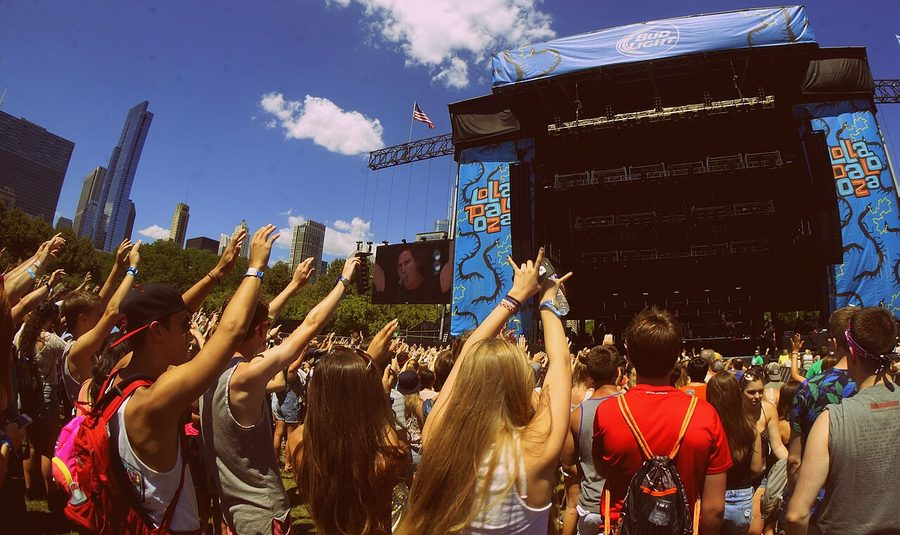

Lollapalooza going global?



Lollapalooza was one of the festivals that set the benchmark for ‘alternative’ events of its ilk throughout the world. After going through its ups and downs over the years it’s still going strong in 2007, with a massive event planned for Chicago in early August with Daft Punk among the headliners. Now festival founder Perry Farrell is talking about taking it across the world…
“I’m going to look to take it global,” Farrell told MTV.com. “I want to put together an event around the world in the next ten years that will refashion, redress, and transform. It’s something I’m looking into now, and if it happens, it will happen quickly. That’s my ambition.”
Linked inextricably with Gen-X culture in a fashion that was lampooned so memorably on that episode of The Simpsons, the Lollapalooza circus kicked off in ’91 and was the biggest festival of its type throughout the decade, bringing big-time alternative acts like Pearl Jam, Smashing Pumpkins, Hole and Sonic Youth to the masses as it traveled across the country.
The love died in 1998 due to lack of interest which led to a five-yearn hiatus, followed by a brief return in 2003. But it’s been put back on the agenda in the past two years with great results, and this year’s event will be headlined by Pearl Jam with support from Daft Punk, Ben Harper, Muse, Iggy Pop, Interpol and Farrell’s own new project Satellite Party.
Who knows what Farrell has in store? Stay tuned.